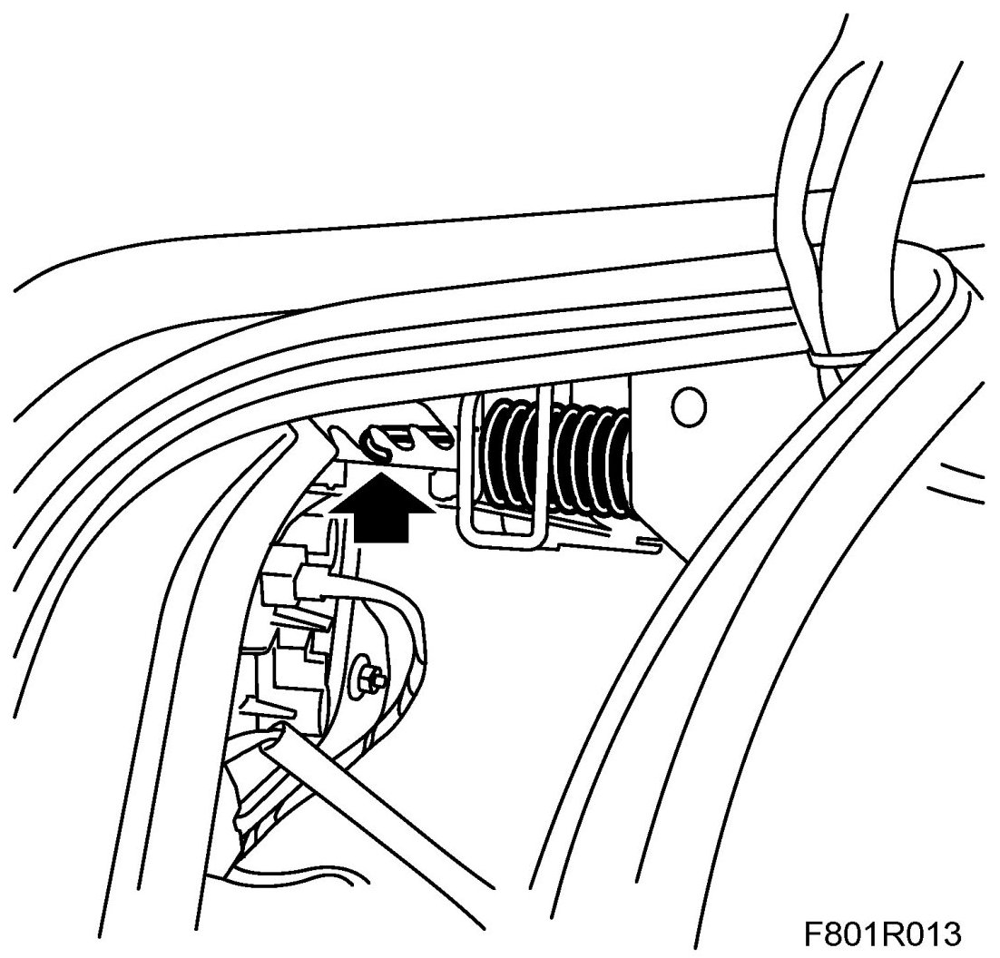
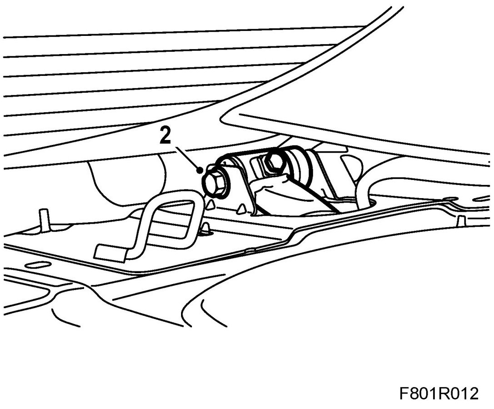
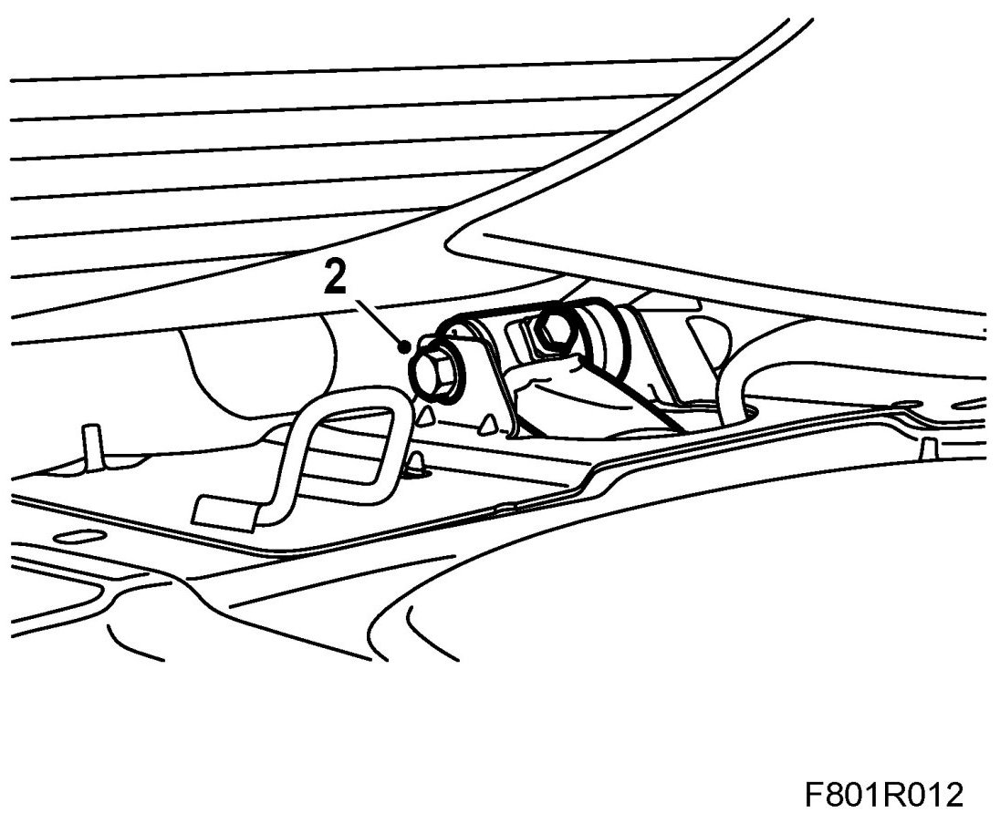

Bootlid Hinge
Bootlid Hinge
To remove
1. Remove the parcel shelf trim. Remove the bootlid.
Open the side hatch and unhook the spring.

2. Remove the nut on the hinge bolt. Pull out the hinge bolt.

3. Remove the hinge.
To fit
1. Position the hinge and fit the hinge bolt.
2. Fit the hinge nut

3. Fit the spring in a suitable position depending on the weight of the bootlid. The springs should be adjusted equally on the right and left-hand sides.
4. Close the side hatch.
Fit and adjust the bootlid. Fit the parcel shelf trim.